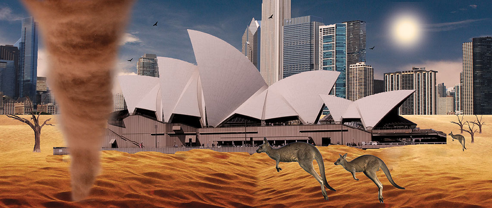
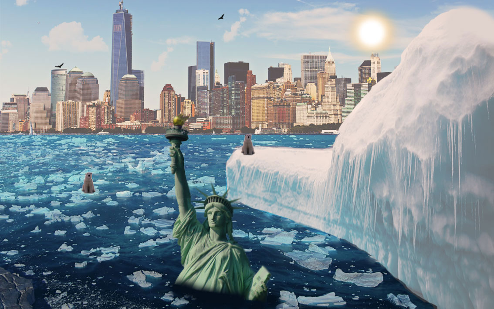

CONTOURCULTURE

The Earth As We Know It
An investigation into global warming and the detrimental effects it has on the Earth
The Pyramids are a mere corner stone in the rich cultural heritage that we have grown to admire about Egypt. But what if they no longer stood in the beautiful desert but instead in lush green grassland? Although this may seem positive, research confirms that one side effect of global warming will be lusher plant life. But will this not affect the ecological balance with which we appreciate nature’s diversity today? Can we imagine an Egypt without its Pyramids? Global warming is fast preceding this once far-fetched scenario.
So what is global warming? The earth is similar to a greenhouse, once the heat enters the greenhouse it gets trapped inside, keeping the greenhouse warm. So you must be wondering what the problem is? Carbon dioxide, nitrous oxide and methane gas emissions, as a result of deforestation, transport and industrial waste are forming and residing in the atmosphere. Consequently, the heat is escaping much slower than it should, creating the greenhouse effect and thereby causing global warming. The Earth is warming up slowly every year. Statistically, since the 1900’s the planet has only warmed up by 0.8°C.
"In the last 100 years the average level has risen by 10 – 25cm and the United Nations have predicted it will rise four times faster through the 21st Century."
Although this increase in temperature may seem insignificant, it’s steadily preceding a detrimental end to the ecological system at large. Its been said that by the end of the 21st century the Earth’s temperature is predicted to rise from 2 to 5 degrees Celsius. As the temperature continues to rise, the world’s climate zone will move northwards. Cooler countries such as France, Germany and Britain are likely to become sub tropical, whereas warmer countries such as Spain and Italy would become deserts and North Africa a dry grassy savannah.
The warmer weather could affect the agriculture of the areas negatively as some crop will not be able to withstand the heat. It may also result in plants and unwelcomed wildlife species migrating to the north. Wildlife species such as the tsetse fly and malaria mosquito could be seen in Europe and the United States.
Global warming will also change the rainfall patterns around the world. Regions with regular rainfall throughout the year could soon face monsoonal downpours resulting in calamitous floods. Experts predict that global warming is blamed for the increased number of violent storms and hurricanes throughout the world even today.
It is also viewed as a major cause in the rising of the sea levels. As the Earth heats up the polar ice caps may gradually start to melt, thus causing the oceans to rise and threatening all coastline cities. Some scientists predict that by the end of the 21st century the sea levels will rise catastrophically causing floods to heavily populated regions of the world. In the last 100 years the average level has risen by 10 – 25cm and the United Nations have predicted it will rise four times faster through the 21st Century. Therefore, it’s projected that by 2100 the sea levels would have risen by three meters.
"Over 3 billion people are predicted to be left homeless due to the rising of sea levels in coastal areas."
Preserving the environment for the future is therefore of great importance and a matter that must be looked at with urgency. At the pace that it’s increasing at today the detrimental outcome of global warming seems inevitable, however will only be so in the case where no effort is made to understand the extent of damage and make slow progress towards creating a sustainable environment. How do you hope to contribute to a better future?